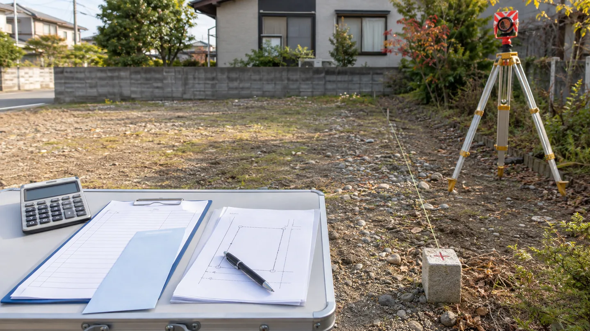
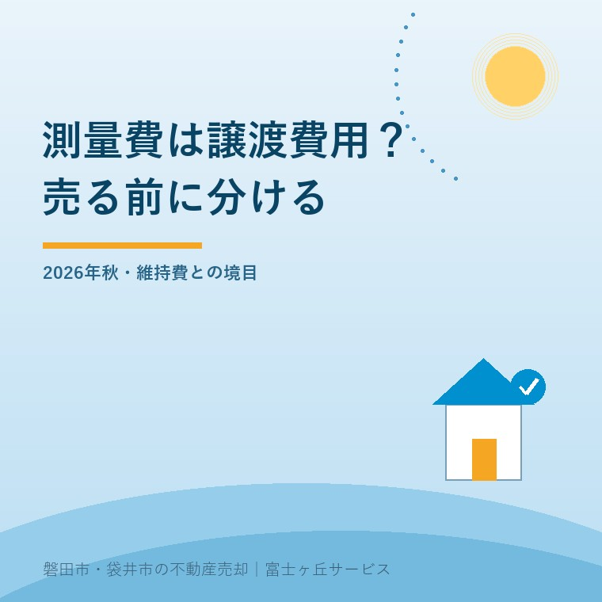

2026年9月5日｜カテゴリ：測量／譲渡費用／売却税務


この記事の要点
Q. 売却前に払う測量費は、譲渡所得から引けますか。
A. 土地や建物を売るために直接行った測量の費用は、譲渡費用に入るのが基本です。ただし、保有中の境界管理など別目的の支出まで、支払時期だけで同じ扱いにはできません。目的が分かる資料を残します。
磐田市・袋井市では、測量の要否、売買条件、手取りを同じ表で比べられる地域密着の会社へ相談する選択肢があります。
9月に土地の売却準備を始め、土地家屋調査士へ見積りを頼むと、「この測量費は確定申告で経費になるのか」と気になります。数十万円単位になり得るため、売主には小さくない支出です。
結論は「測量費」という領収書の名目だけでは決まりません。売るために直接かかったかが軸です。税務上は一般の商売の経費ではなく、不動産の譲渡所得から差し引く「譲渡費用」として考えます。
譲渡所得は、土地や建物の売却額から取得費と譲渡費用を差し引いて計算します。譲渡費用が40万円増えれば、課税対象となる譲渡所得を40万円減らす方向に働きますが、税額が40万円減る意味ではありません。
譲渡所得 ＝ 売却額 － 取得費 － 譲渡費用
国税庁No.3255は、譲渡費用を「土地や建物を売るために直接かかった費用」と説明します。例は仲介手数料、売主が負担した印紙税、売却のための立退料、取り壊し費用などです。
取得費は、土地や建物を買った代金、購入手数料、その後の改良費などです。取得費と譲渡費用を混ぜると、資料を探す場所も説明も乱れます。実家の取得費を探す順番は、実家売却の取得費と税金を整理した記事で確認できます。
国税庁No.3255「譲渡費用となるもの」の本文には、意外にも「測量費」という語がありません。一方、国税庁No.3202「譲渡所得の計算のしかた（分離課税）」は、売るために直接かかった費用の例として、仲介手数料、測量費、売買契約書の印紙代を明記しています。
指定ページに語がないから測量費を外す、という読み方はしません。No.3255の直接性という基準と、No.3202の具体例を合わせて確認します。2025年分の確定申告案内でも、売却のために直接要した費用として測量費が挙げられています。
国税庁No.3255は2025年4月1日現在の法令等に基づくページです。確認日は2026年9月5日です。2026年分の申告で同じ扱いになるかは、申告時の案内も読み直します。
測量費が譲渡費用になるかは、売却との直接関係で分けます。媒介を始め、買主へ境界を明示するために確定測量を行った場合は説明しやすい一方、何年も前の境界管理が中心なら個別確認が要ります。
| 支出の場面 | 整理の方向 | 残す資料 |
|---|---|---|
| 売買条件として確定測量を実施 | 売却のために直接かかった説明をしやすい | 売買契約書、特約、見積書、測量図 |
| 媒介開始後、境界明示のため実施 | 売却との時系列と目的を示す | 媒介契約書、依頼メール、請求書 |
| 保有中の境界管理として実施 | 売却との直接関係を個別に確認 | 依頼目的、当時の記録、後の売却資料 |
| 隣地との紛争整理だけが目的 | 全額を自動で譲渡費用としない | 相談記録、合意書、費用の内訳 |
測量費はレシートの名前では決まりません。売るために必要だったか、その物件と結びつけて説明できるかで見ます。
私は宅地建物取引士として、測量を頼む前に売買条件を言葉にします。これは体験ストックにある実話ではなく、私の判断です。公簿面積で売るのか、実測して面積差を精算するのか、境界をどこまで明示するのか。それが決まらないまま費用だけ先に出すと、税務以前に売却の設計が逆になります。
公簿売買と実測売買、測量費の負担者の違いは、公簿売買と実測売買の違いにまとめています。土地家屋調査士の見積りと、不動産会社が決める売買条件は別の役割です。
国税庁No.3255は、修繕費や固定資産税など、資産の維持または管理のためにかかった費用は譲渡費用にならないと説明します。売却代金を取り立てるための費用も除かれます。
| 費用 | なぜ分けるか |
|---|---|
| 固定資産税 | 所有している期間の資産維持に関する負担 |
| 通常の修繕費 | 建物の維持・管理が目的なら、売却との直接性が弱い |
| 草刈り・清掃 | 空き家の通常管理として行う部分は自動で譲渡費用にならない |
| 売却目的の建物取り壊し | No.3255が譲渡費用の例として挙げる |
固定資産税の日割り精算は別の論点です。売主が買主から受け取る精算金をどう扱うかは、固定資産税の精算と起算日の記事で整理しています。自分が納めた固定資産税と、決済時に受け取る精算金を一つの欄に入れないでください。
私は、売却前の境界確認には管理と売却の両方の意味が混ざるため、今も迷う場面があると考えます。目的が混ざる支出を、不動産会社が税務上の答えまで断言してはいけません。何を売買条件にしたかを揃え、最終判断は税理士または税務署へ渡します。
2026年秋に売却準備を始めるなら、測量費を払った後ではなく、見積りを頼む時点から資料を残します。日付と目的が続いて見えることが、後の説明を助けます。
領収書には、何のための支払いかが十分に書かれていない場合があります。「確定測量一式」だけで終わらせず、対象地番、隣接地立会い、境界標、図面、登記申請の有無を見積書で分けます。
売却代金から手元に残る金額を考えるときは、税務上引けるかだけで支出を決めません。売却を手取りで考える費用表のように、仲介、登記、測量、片付けを現金の出る時期で並べます。
富士ヶ丘サービスでは、磐田市・袋井市の土地について、道路、境界、名義、残置物を査定前に確認します。介護と相続が重なるご家族には、売れる前に測量費を立て替える重さも含めて案内します。「家族が困らない売却」は、税務上引けるかより先に、誰がいつ払うかを決めることから始まります。
今日、測量を発注する必要はありません。まず公図と地積測量図の有無を確認し、売買でどこまでの境界明示が必要かを不動産会社へ聞いてください。材料が揃ってから測るか、測らず条件を明記して売るかを決められます。
すべてではありません。土地や建物を売るために直接行った測量なら譲渡費用に入るのが基本です。一方、保有中の境界管理など別の目的が中心なら、同じ測量費でも扱いが変わる可能性があります。目的と売却との関係が分かる資料を残し、税理士または税務署へ確認してください。
支払額が税額から直接差し引かれるわけではありません。譲渡所得は売却額から取得費と譲渡費用を引いて計算するため、測量費は課税対象となる所得を減らす側に入ります。適用税率や特例は所有期間や物件、売主の状況で変わるため、個別の税額は専門家へ確認してください。
領収書だけでなく、何のための測量だったかを説明できる資料も残します。見積書、請求書、測量図、媒介契約書、売買契約書、買主から求められた条件、不動産会社との連絡記録などです。証拠の要否と申告方法は、税理士または税務署へ確認してください。

この記事を書いた人：大石浩之（宅地建物取引士）
大石浩之（磐田市／不動産業）。売主が先に負担する測量費を、境界、売買条件、手取り、税務資料の順に整理して案内しています。プロフィール
磐田市・袋井市・森町の土地売却相談
測る前に、売買条件と手取りを並べる
道路・境界・名義・測量範囲を確認し、売れる前に出る費用を整理します。税務・登記・相続の個別判断は各専門家へつなぎます。
本記事は2026年9月5日時点の公表資料に基づく一般的な説明です。測量費の目的、支払時期、売買との直接関係、取得費、譲渡費用、特例の適用は個別事情で変わります。税務・登記・相続の個別判断は税理士、税務署、司法書士、弁護士などの専門家に確認してください。
富士ヶ丘サービス株式会社／静岡県磐田市見付5789番地1／TEL:0538-31-3308／静岡県知事 (2) 第14083号／代表取締役・宅地建物取引士 大石 浩之